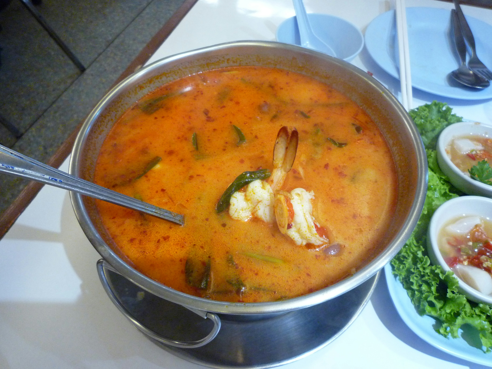
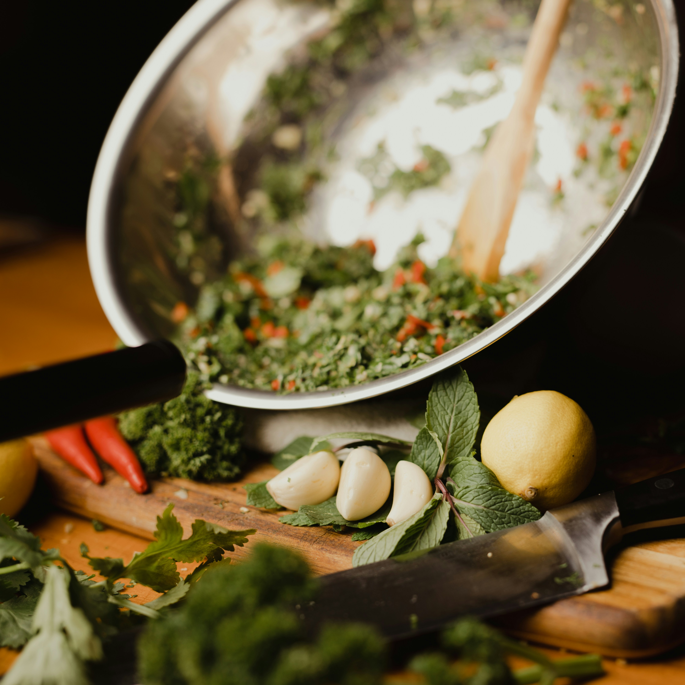

Food Gallery

Spaghetti Carbonara
Silky pasta tossed with eggs, pecorino cheese, and crispy pork.
Photo by Zoran Borojevic on Unsplash

Tom Yum Soup
A spicy and sour Thai broth with lemongrass, lime, and fresh shrimp.
Photo by Jamie Trinh on Unsplash

Steak with Chimichurri
Flame-grilled beef drizzled with tangy garlic and parsley herb sauce.
Photo by Adrian Hoffmann on Unsplash

Shrimp Ceviche
Citrus-cured shrimp with fresh tomatoes, onion, cilantro, and avocado.